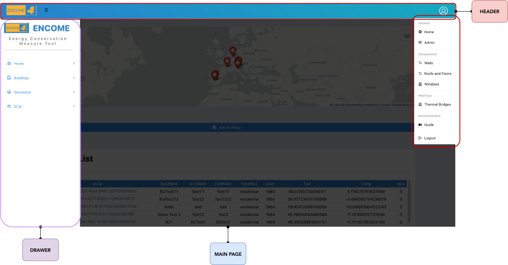

Chapter 2 Interface
The interface consists mainly of 3 basic parts:
The HEADER: Selecting the “user” icon a drop-down menu will be shown. Within the latter, the following functions can be accessed:
Figure 2.1: ENCOME frontend interface
General
- Home: return all home page
- Admin: link to the administrator page where user creation and management is possible. Only for administrator users.
Components
- Walls: link to the database of the available opaque vertical components
- Roofs and Floors: link to the database of available opaque horizontal components
- Windows: link to the database of available transparent components
Heat Loss
- Thermal Bridges: link to the abacus of thermal bridges
Documentation
- Guide: link to the guidelines of the tool
Logout: disconnection to the application
The DRAWER: in the left drawer is it possible to visualize 4 main tool functionality:
- Home: Homepage of tool, where the list o buildings are visualized
- Building: Page with building cards, to be selected for system and building inputs
- Simulation: Page with building cards for simulations, calibration, and visualization of results
- ECM: Page of building to apply Energy Conservation Measures (ECMs).
- Facade and Systems: ECM applied to facade and systems.
- PV Systems: ECM of Photovoltaic. Where it is possible to simulate and optimize PV plan
The MAIN PAGE: in the main page the outputs of the tool are visualized.